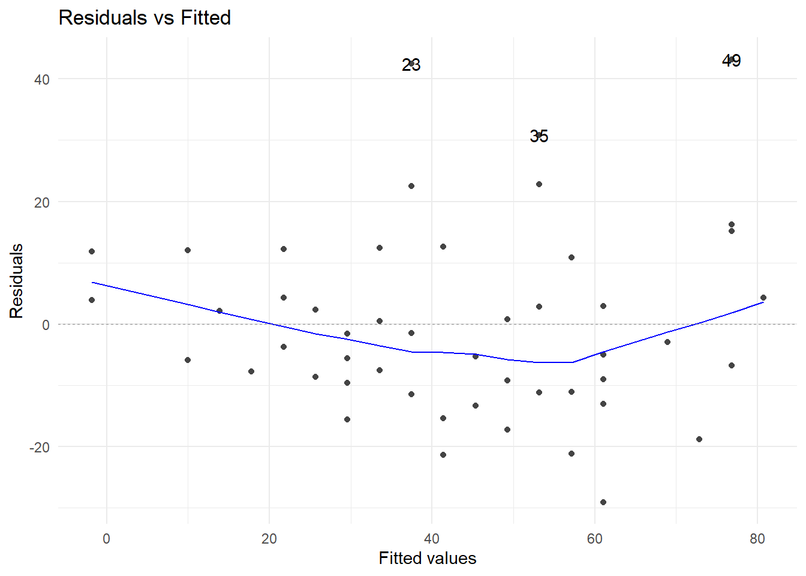
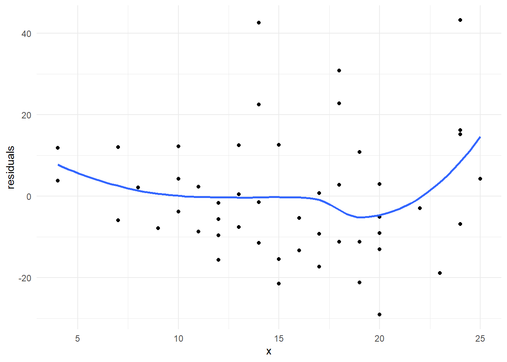
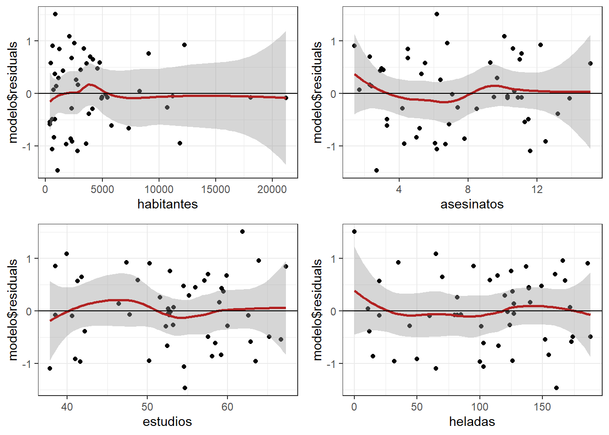

4 Regresión lineal múltiple
La mayoría de los fenómenos reales son multicausales, por esta razón, un modelo de regresión más acorde a estudios reales es el modelo de regresión lineal múltiple, que es la generalización del modelo simple.
En este modelo supondremos que la variable de respuesta, \(y\), puede explicarse a través de una colección de \(k\) covariables \(x_1,\dots,x_k\).
El modelo se escribe de la siguiente manera:
\[y_i = \beta_0+\beta_1 x_1^{(i)}+\beta_2 x_2^{(i)}+\dots++\beta_k x_k^{(i)}+\epsilon_i\] Al igual que en el caso simple, los parámetros del modelo se pueden estimar por mínimos cuadrados, con el inconveniente de que no se pueden realizar inferencias sobre ellos. Nuevamente, para poder hacer intervalos de confianza y pruebas de hipótesis sobre los verdaderos parámetros hay que suponer que el vector de errores se distribuye normal, en este caso multivariada, es decir:
\[\epsilon\sim N_n(0,\sigma^2\mathbb{I})\]
Esta estructura del error permite tener las mismas propiedades distribucionales que en regresión simple, es decir, \(y_i\) se distribuye normal y \(\beta_i\) tiene distribución normal, facilitando las inferencias sobre cada parámetro y la construcción de intervalos de predicción para las \(y\)’s.
4.1 Solución al problema de regresión lineal múltiple: Ecuaciones normales
Las expresiones para estimar los parámetros involucrados en el modelo son:
\[\hat{\beta}=(X^TX)^{-1}X^Ty\] \[\hat{\sigma}^2=\frac{\sum_{i=1}^n(y_i-\hat{y_i})^2}{n-p}\]
donde \(p=k+1\) es el número total de parámetros en el modelo.
Tanto en el modelo simple como en el múltiple, la variación total de las \(y\)’s se puede descomponer en una parte que explica el modelo, i.e., los \(k\) regresores o variables explicativas y otra no explicada por estas variables, llamada error.
\[\sum_{i=1}^n(y_i-\bar{y})^2=\sum_{i=1}^n(\hat{y_i}-\bar{y})^2+\sum_{i=1}^n(\hat{y_i}-y_i)^2\]
4.2 Prueba de hipótesis
La descomposición anterior ayuda para realizar la importante prueba de hipótesis:
\[H_0:\beta_1=\beta_2=\dots=\beta_k=0\ vs.\ H_a:\beta_i\neq0 \ p.a. \ i\]
misma que se realiza a través del cociente entre los errores cuadráticos medios:
\[F_0=\frac{SS_R/k}{SS_E/(n-k-1)}=\frac{MS_R}{MS_E}\sim F_{(k,n-k-1)}\] Esta estadística se desprende de la tabla de análisis de varianza, que es muy similar a la tabla ANOVA que se utiliza para hacer pruebas de hipótesis.
En este caso la tabla es:
| Fuente de variación | Grados de libertad | Suma de cuadrados | Cuadrados medios | F |
|---|---|---|---|---|
| Regresión | k | \(SS_R\) | \(MS_R=SS_R/k\) | |
| Error | n-k-1 | \(SS_E\) | \(MS_E=SS_E/(n-k-1)\) | \(F=\frac{MS_R}{MS_E}\) |
| Total | n-1 | \(S_{yy}\) |
Por lo general, esta estadística rechaza la hipótesis nula, ya que de lo contrario, implicaría que ninguna de las variables contribuye a explicar la respuesta, \(y\). Como se puede observar en la hipótesis alternativa, el rechazar \(H_0\) solo implica que al menos uno de los regresores contribuye significativamente a explicar \(y\).
Asimismo, el rechazar \(H_0\) no implica que todos contribuyan ni tampoco dice cuál o cuáles contribuyen, por esta razón, una salida estándar de regresión múltiple tiene pruebas individuales sobre la significancia de cada regresor en el modelo.
El estadístico para hacer tanto los contrastes de hipótesis como los intervalos de confianza individuales, es:
\[t=\frac{\hat{\beta_i}-\beta_0^{(i)}}{\sqrt{\hat{\mathbb{V}ar}(\hat{\beta_i})}}\sim t_{(n-p)}\] Podemos apreciar que los constrastes de hipótesis se pueden hacer contra cualquier valor particular del parámetro \(\beta_0^{(i)}\), en general. No obstante, en las pruebas estándar sobre los parámetros de un modelo, este valor particular es 0, ya que se intenta determinar si la variable asociada al \(i\)-ésimo parámetro es estadísticamente significativa para explicar la respuesta.
Por lo que el estadístico para este caso es:
\[t=\frac{\hat{\beta_i}}{\sqrt{\hat{\mathbb{V}ar}(\hat{\beta_i})}}\sim t_{(n-p)}\]
De este estadístico se desprenden también los intervalos de confianza para cada parámetro:
\[\beta_i\in(\hat{\beta_i}\pm t_{(n-p,1-\alpha/2)} \sqrt{\hat{\mathbb{V}ar} (\hat{\beta_i})})\]
4.3 Interpretación de parámetros
La interpretación de cada parámetro es similar a la del coeficiente de regresión \(\hat{\beta_1}\) en el modelo simple, anexando la frase: “manteniendo constantes el resto de las variables.”
Esto es, \(\hat{\beta_i}\) es el cambio promedio o cambio esperado en \(y\) por unidad de cambio en \(x_i\), sin considerar cambio alguno en ninguna de las otras variables dentro del modelo, es decir, suponiendo que estas otras variables permanecen fijas. Esta interpretación es similar a la que se hace de la derivada parcial en un modelo determinista.
Nuevamente, la interpretación de \(\hat{\beta_0}\) estará sujeta a la posibilidad de que, en este caso, todas las variables puedan tomar el valor cero.
4.4 Predicción de nuevos valores
Uno de los usos más frecuentes del modelo de regresión es el de predecir un valor de la respuesta para un valor particular de las covariables en el modelo. Si la predicción se realiza para un valor de las covariables dentro del rango de observación de las mismas, se tratará de una interpolación, y si se realiza para un valor fuera de este rango, hablaremos de una extrapolación.
En cualquiera de los dos casos, estaremos interesados en dos tipos de predicciones:
Predicción de la respuesta media: \(y_0=\mathbb{E}(y|X_0)\)
Predicción de una nueva observación: \(y_0\)
En ambos casos, la estimación puntual es la misma: \(\hat{y_0}=X_0^T\hat{\beta}\)
Lo que difiere es el intervalo de predicción.
Para la respuesta media es: \(y_0=(\hat{y_0}\pm t_{(n-p,1-\alpha/2)}\sqrt{\hat{\sigma^2}X_0^T(X^TX)^{-1}X_0})\)
Y para predecir una observación: \(y_0=(\hat{y_0}\pm t_{(n-p,1-\alpha/2)}\sqrt{\hat{\sigma^2}(1+X_0^T(X^TX)^{-1}X_0)})\)
4.5 Coeficiente de determinación
Un primer elemento de juicio sobre el modelo de regresión lo constituye el coeficiente de determinación \(R^2\), que es la proporción de variabilidad de las \(y\)’s que es explicada por las \(x\)’s y que se escribe como:
\[R^2=\frac{SS_R}{S_{yy}}=1-\frac{SS_E}{S_{yy}}\] Una \(R^2\) cercana a uno implicaría que mucha de la variabilidad de la respuesta es explicada por el conjunto de regresores incluidos en el modelo.
Es deseable tener una \(R^2\) grande en nuestro modelo, pero esto no significa, como mucha gente piensa, que ya el modelo está bien ajustado.
4.6 Evaluación de supuestos
Los dos modelos de regresión presentados, el simple y el múltiple, se construyeron sobre los supuestos de:
La relación funcional entre la variable de respuesta \(y\) y cada regresor \(x_i\) es lineal
La esperanza de los errores es cero, \(\mathbb{E}(\epsilon_i=0)\)
La varianza de los errores es constante, \(\mathbb{V}ar(\epsilon_i) = \sigma^2\)
Los errores no están correlacionados, \(\mathbb{C}ov(\epsilon_i, \epsilon_j) = 0;\ i\neq j\)
Los errores tienen distribución normal con media cero y varianza \(\sigma^2\)
Entonces, para garantizar que el modelo es adecuado, es indispensable verificar estos supuestos.
4.6.1 Residuos
Los elementos más importantes para verificar estos supuestos son los residuos, definidos como:
\[e_i=y_i-\hat{y}_i\]
Estos residuos representan la discrepancia entre la respuesta predicha por el modelo ajustado, \(\hat{y}_i\) y el correspondiente valor observado, \(y_i\).
En la literatura de regresi ́on lineal existen cuatro tipos de residuos, a saber
Residuo crudo: \(e_i\)
Residuo estandarizado: \(d_i=\frac{e_i}{\sqrt{\hat{\sigma}^2}}\)
Residuo estudentizado interno: \(r_i=\frac{e_i}{\sqrt{\hat{\sigma}^2(1-h_{ii}})}\)
Residuo estudentizado externo: \(t_i=\frac{e_i}{\sqrt{\hat{\sigma_{(-i)}}^2(1-h_{ii})}}\)
Estos residuos se utilizan en los distintos procedimientos para evaluar los supuestos y lo adecuado del ajuste del modelo. La mayoría de las pruebas conocidas para la verificación de los supuestos, son pruebas gráficas.
Indudablemente, la prueba más importante es sobre la normalidad de los errores, ya que sobre este supuesto descansan todas la inferencias de este modelo.
La manera de verificarlo es a través de la gráfica conocida como QQ-plot o QQ-norm, que grafica los cuantiles teóricos de una distribución normal (eje x) vs. los cuantiles asociados a los residuos. Entonces, si los residuos realmente provienen de una normal, la gráfica debe mostrar la función identidad. Fuertes desviaciones de esta línea darían evidencia de que los errores no se distribuyen normal.

4.6.2 Linealidad de los predictores
La manera estándar de evaluar la linealidad de las variables explicativas es a través de la gráfica de cada una de ellas contra los residuos. Si la variable en cuestión ingresa al modelo de manera lineal, esta gráfica debe mostrar un patrón totalmente aleatorio entre los puntos dispuestos en ella.
Cuando la variable explicativa es politómica, este tipo de gráficas son poco ilustrativas en este sentido.

4.6.3 Supuestos sobre los errores
Si la gráfica entre los valores ajustados y los residuos estandarizados, muestra un patrón aleatorio, es simétrica alrededor del cero y los puntos están comprendidos entre los valores -2 y 2, entonces se tendrá evidencia de que los errores tienen media cero, varianza constante y no están correlacionados.

Los métodos mostrados hasta ahora, permiten evaluar el modelo de manera global y no por cada observación dentro del mismo. Dado que una observación puede resultar determinante sobre alguna(s) característica(s) del modelo, es conveniente verificar el impacto que cada observación pueda tener en los distintos aspectos del modelo. Las estadísticas para evaluar el impacto que tiene una observación sobre todo el vector de parámetros, alguno de los regresores y sobre los valores predichos, se basan en la misma idea, que consiste en cuantificar el cambio en la característica de interés con y sin la observación que se está evaluando.
4.6.4 Puntos palanca
Antes de presentar las estadísticas que servirán para hacer este diagnóstico, introduciremos un elemento que es común a ellas: la llamada palanca (leverage) de una observación.
Recordemos que el ajuste del modelo se expresaba como:
\[\hat{\beta}=(X^TX)^{-1}X^Ty \Rightarrow \hat{y}=X\hat{\beta}=Hy\]
Con \(H\) conocida como la matriz sombrero.
Un resultado fundamental sobre esta matriz sombrero es:
\[\mathbb{V}ar(e)=(I-H)\sigma^2 \Rightarrow \mathbb{V}ar(e_i)=(1-h_i)\sigma^2\] Con \(h_i\) el i-ésimo elemento de la diagonal de la matriz \(H\).
Observemos que esta palanca sólo depende de \(X\), entonces, una observación con una palanca, \(h_i\), grande, es aquella con valores extremos en alguna(s) de su(s) covariable(s).
Ya que el promedio de las \(h_i's\) es \(p/n\), consideraremos una observación con palanca grande si su palanca es mayor a \(2p/n\). En este sentido, \(h_i\) corresponde a la distancia de Mahalanobis de \(X\) definida como \((X-\bar{X})^T\hat{\Sigma}^{-1}(X-\bar{X})\).
La dependencia de las estadísticas para el diagnóstico de las observaciones, estriba en que sus cálculos dependen de los valores de la palanca de cada individuo. Estas estadísticas son:
- Distancia de Cook
- Dfbetas
- Dffits
Distancia de Cook: Sirve para determinar si una observación es influyente en todo el vector de parámetros. Una observación se considera influyente, si su distancia de Cook sobrepasa el valor uno.

Dfbetas: Sirven para determinar si una observación es influyente en alguno de los coeficientes de regresión. Hay un dfbeta por cada parámetro dentro del modelo, incluido, por supuesto, el de la ordenada al origen. La regla de dedo es que la observación \(i\) es influyente en el j-ésimo coeficiente de regresión si:
\[|Dfbetas_{j,i}|>\frac{2}{\sqrt{n}}\]

Dffits: Se utilizan para determinar si una observación es influyente en la predicción de \(y\). Se dice que la i-ésima observación es influyente para predecir \(y\), si:
\[|Dffits_i|>2\sqrt{\frac{p}{n}}\]

4.6.5 Multicolinealidad
El modelo de regresión lineal múltiple, se construye bajo el supuesto de que los regresores son ortogonales, i.e., son independientes.
Desafortunadamente, en la mayoría de las aplicaciones el conjunto de regresores no es ortogonal. Algunas veces, esta falta de ortogonalidad no es seria; sin embargo, en algunas otras los regresores están muy cerca de una perfecta relación lineal, en tales casos las inferencias realizadas a través del modelo de regresión lineal pueden ser erróneas. Cuando hay una cercana dependencia lineal entre los regresores, se dice que estamos en presencia de un problema de multicolinealidad.
Efectos de la multicolinealidad:
Varianzas de los coeficientes estimados son muy grandes.
Los estimadores calculados de distintas sub muestras de la misma población, pueden ser muy diferentes.
La significancia de algún regresor se puede ver afectada (volverse no significativo) por que su varianza es más grande de lo que debería ser en realidad o por la correlación de la variable con el resto dentro del modelo.
Es común que algún signo de un parámetro cambie, haciendo ilógica su interpretación dentro del modelo.
4.6.5.1 ¿Cómo detectar multicolinealidad?
Matriz de correlación.
Examinar las correlaciones entre pares de variables:
\[r_{ij}\ \ \ i, j = 1, 2, \dots, k\ \ i\neq j\]
Pero, si dos o más regresores están linealmente relacionados, es posible que ninguna de las correlaciones entre cada par de variables, sea grande.
Factor de inflación de la varianza.
\[VIF_j=(1-R_j^2)^{-1}\] Con \(R_j^2\) el coeficiente de determinación del modelo de regresión entre el j-ésimo regresor, \(x_j\) (tomado como variable de respuesta) y el resto de los regresores \(x_i\), \(i\neq j\).
Experiencias prácticas indican que si algunos de los VIF’s excede a 10, su coeficiente asociado es pobremente estimado por el modelo debido a multicolinealidad.
Análisis del eigensistema.
Basado en los eigenvalores de la matriz \(X^TX\).
Número de condición.
\[K=\frac{\lambda_{max}}{\lambda_{min}}\] Si el número de condición es menor que 100, no existen problemas serios de multicolinealidad. Si está entre 100 y 1000 existe de moderada a fuerte multicolinealidad y si excede a 1000, hay severa multicolinealidad.
Índice de condición.
\[k_j=\frac{\lambda_{max}}{\lambda_j}\] Si el índice de condición es menor que 10, no hay ningún problema. Si está entre 10 y 30, hay moderada multicolinealidad, y si es mayor que 30, existe una fuerte colinealidad en la j-ésima variable en el modelo.
N.B. En algunos paquetes estos índices se presentan aplicando la raíz cuadrada a su expresión, entonces hay que extraer raíz a los puntos de corte de los criterios correspondientes.
4.6.6 Relación funcional
Un supuesto importante en el modelo de regresión es el que considera que debe existir una relación funcional lineal entre cada regresor y la variable de respuestas. Pero, ¿qué debemos hacer si no se cumple esta relación lineal de la respuesta con alguno(s) de los regresor(es)?
Primero, ya dijimos que este supuesto se evalúa realizando la gráfica de dispersión entre los residuos del modelo y los valores de la variable en cuestión. Cuando no hay una asociación lineal entre la respuesta y la covariable, generalmente este diagrama de dispersión muestra un patrón (tendencia) que sugiere qué tipo de transformación se debería hacer a la covariable para lograr linealidad con la respuesta.
Debe quedar claro que la transformación puede realizarse a la variable explicativa o a la variable de respuesta.
A muchos investigadores no les gusta transformar la respuesta porque argumentan que pierden interpretabilidad del modelo. Aunque esto puede ser cierto, existen transformaciones de la respuesta que pueden regresarse para interpretar el modelo con la respuesta original.

Un problema asociado a esta identificación por parte del usuario, es que debe tener experiencia para asociar estas formas a una función analítica específica; hecho no necesariamente cierto. Por lo tanto, requiere de alguna herramienta técnica que pudiera auxiliarlo en esta labor.
Un buen auxiliar, en el caso de que se crea que es necesario transformar la respuesta, es usar la llamada trasformación Box-Cox.
4.6.6.1 Transformación Box-Cox
La transformación Box-Cox de la respuesta, es una función que sirve para normalizar la distribución del error, estabilizar la varianza de este error y mejorar la relación lineal entre \(y\) y las \(X’s\).
Se define como:
\[y_i^{\lambda} = \left\{ \begin{array}{ll} \frac{y_i^{\lambda-1}}{\lambda}, & \lambda \neq 0;\\ ln(y_i), & \lambda=0 .\end{array} \right.\] La siguiente tabla muestra el rango de valores de \(\lambda\) que estarían asociados a una transformación analítica común.
| Rango \(\lambda\) | Transformación Asociada |
|---|---|
| (-2.5, -1.5] | \(\frac{1}{y^2}\) |
| (-1.5, -0.75] | \(\frac{1}{y}\) |
| (-0.75, -0.25] | \(\frac{1}{\sqrt{y}}\) |
| (-0.25, 0.25] | \(ln(y)\) |
| (0.25, 0.75] | \(\sqrt{y}\) |
| (0.75, 1.25] | \(y\) |
| (1.25, 2.5) | \(y^2\) |
4.6.6.2 Transformación Box-Tidwell
Box y Tidwell implementan un proceso iterativo para encontrar la mejor transformación de las variables predictoras en el modelo de regresión lineal.
Definiendo como \(X_j^{\gamma_j}\) la correspondiente transformación Box-Tidwell de la variable \(j\).
La tabla anterior para las transfomaciones analíticas de la respuesta, también aplican para estas transformaciones de los predictores.
4.7 Aplicación en R
4.7.1 Ejemplo: Predicción de esperanza de vida
Un estudio quiere generar un modelo que permita predecir la esperanza de vida media de los habitantes de una ciudad en función de diferentes variables. Se dispone de información sobre: habitantes, analfabetismo, ingresos, esperanza de vida, asesinatos, nivel de estudios, presencia de heladas, área y densidad poblacional.
Usaremos los datos state.x77 disponibles dentro de R que contiene estadísticas para los 50 estados de Estados Unidos.
Primero modificamos los nombres de las variables para que sean más amigables y creamos una nueva variable calculada que represente la densidad poblacional del estado.
4.7.1.1 Analizar la relación entre variables
El primer paso a la hora de establecer un modelo lineal múltiple es estudiar la relación que existe entre variables. Esta información es crítica a la hora de identificar cuáles pueden ser los mejores predictores para el modelo, qué variables presentan relaciones de tipo no lineal (por lo que no pueden ser incluidas) y para identificar colinealidad entre predictores. A modo complementario, es recomendable representar la distribución de cada variable mediante histogramas.
Las dos formas principales de hacerlo son mediante representaciones gráficas (gráficos de dispersión) y el cálculo del coeficiente de correlación de cada par de variables.
round(cor(x = datos), 2)## habitantes ingresos analfabetismo esp_vida asesinatos estudios heladas area densidad_pobl
## habitantes 1.00 0.21 0.11 -0.07 0.34 -0.10 -0.33 0.02 0.25
## ingresos 0.21 1.00 -0.44 0.34 -0.23 0.62 0.23 0.36 0.33
## analfabetismo 0.11 -0.44 1.00 -0.59 0.70 -0.66 -0.67 0.08 0.01
## esp_vida -0.07 0.34 -0.59 1.00 -0.78 0.58 0.26 -0.11 0.09
## asesinatos 0.34 -0.23 0.70 -0.78 1.00 -0.49 -0.54 0.23 -0.19
## estudios -0.10 0.62 -0.66 0.58 -0.49 1.00 0.37 0.33 -0.09
## heladas -0.33 0.23 -0.67 0.26 -0.54 0.37 1.00 0.06 0.00
## area 0.02 0.36 0.08 -0.11 0.23 0.33 0.06 1.00 -0.34
## densidad_pobl 0.25 0.33 0.01 0.09 -0.19 -0.09 0.00 -0.34 1.00multi.hist(x = datos, dcol = c("blue", "red"), dlty = c("dotted", "solid"), main = "")Otros paquetes permiten representar a la vez los diagramas de dispersión, los valores de correlación para cada par de variables y la distribución de cada una de las variables, ese es el caso de la función ggpairs.
library(GGally)## Warning: package 'GGally' was built under R version 4.0.4ggpairs(datos, lower = list(continuous = "smooth"),
diag = list(continuous = "barDiag"), axisLabels = "none")Del análisis preliminar se pueden extraer las siguientes conclusiones:
Las variables que tienen una mayor relación lineal con la esperanza de vida son: asesinatos (\(r=-0.78\)), analfabetismo (\(r=-0.59\)) y estudios (\(r=0.58\)).
Asesinatos y analfabetismo están medianamente correlacionadas (\(r = 0.7\)) por lo que posiblemente no sea útil introducir ambos predictores en el modelo.
Las variables habitantes, área y densidad poblacional muestran una distribución exponencial, una transformación logarítmica posiblemente haría más normal su distribución.
4.7.1.2 Generar el modelo
Sabemos que hay diferentes formas (algoritmos) para llegar al modelo final más adecuado. En este caso se va a emplear el método mixto iniciando el modelo con todas las variables como predictores y realizando la selección de los mejores predictores con la medición Akaike(AIC).
modelo <- lm(esp_vida ~ habitantes + ingresos + analfabetismo + asesinatos +
estudios + heladas + area + densidad_pobl, data = datos )
summary(modelo)##
## Call:
## lm(formula = esp_vida ~ habitantes + ingresos + analfabetismo +
## asesinatos + estudios + heladas + area + densidad_pobl, data = datos)
##
## Residuals:
## Min 1Q Median 3Q Max
## -1.47514 -0.45887 -0.06352 0.59362 1.21823
##
## Coefficients:
## Estimate Std. Error t value Pr(>|t|)
## (Intercept) 6.995e+01 1.843e+00 37.956 < 2e-16 ***
## habitantes 6.480e-05 3.001e-05 2.159 0.0367 *
## ingresos 2.701e-04 3.087e-04 0.875 0.3867
## analfabetismo 3.029e-01 4.024e-01 0.753 0.4559
## asesinatos -3.286e-01 4.941e-02 -6.652 5.12e-08 ***
## estudios 4.291e-02 2.332e-02 1.840 0.0730 .
## heladas -4.580e-03 3.189e-03 -1.436 0.1585
## area -1.558e-06 1.914e-06 -0.814 0.4205
## densidad_pobl -1.105e-03 7.312e-04 -1.511 0.1385
## ---
## Signif. codes: 0 '***' 0.001 '**' 0.01 '*' 0.05 '.' 0.1 ' ' 1
##
## Residual standard error: 0.7337 on 41 degrees of freedom
## Multiple R-squared: 0.7501, Adjusted R-squared: 0.7013
## F-statistic: 15.38 on 8 and 41 DF, p-value: 3.787e-10El modelo con todas las variables introducidas como predictores tiene una \(R^2\) alta (\(0.7501\)), i.e. es capaz de explicar el \(75.01%\) de la variabilidad observada en la esperanza de vida.
El p-value del modelo es significativo (\(3.787e-10\)) por lo que se puede aceptar que el modelo no es por azar, al menos uno de los coeficientes parciales de regresión es distinto de 0. Muchos de ellos no son significativos, lo que es un indicativo de que podrían no contribuir al modelo.
4.7.1.3 Selección de los mejores predictores
En este caso se van a emplear la estrategia de stepwise mixto. El valor matemático empleado para determinar la calidad del modelo va a ser Akaike(AIC).
step(object = modelo, direction = "both", trace = 1)## Start: AIC=-22.89
## esp_vida ~ habitantes + ingresos + analfabetismo + asesinatos +
## estudios + heladas + area + densidad_pobl
##
## Df Sum of Sq RSS AIC
## - analfabetismo 1 0.3050 22.373 -24.208
## - area 1 0.3564 22.425 -24.093
## - ingresos 1 0.4120 22.480 -23.969
## <none> 22.068 -22.894
## - heladas 1 1.1102 23.178 -22.440
## - densidad_pobl 1 1.2288 23.297 -22.185
## - estudios 1 1.8225 23.891 -20.926
## - habitantes 1 2.5095 24.578 -19.509
## - asesinatos 1 23.8173 45.886 11.707
##
## Step: AIC=-24.21
## esp_vida ~ habitantes + ingresos + asesinatos + estudios + heladas +
## area + densidad_pobl
##
## Df Sum of Sq RSS AIC
## - area 1 0.1427 22.516 -25.890
## - ingresos 1 0.2316 22.605 -25.693
## <none> 22.373 -24.208
## - densidad_pobl 1 0.9286 23.302 -24.174
## - estudios 1 1.5218 23.895 -22.918
## + analfabetismo 1 0.3050 22.068 -22.894
## - habitantes 1 2.2047 24.578 -21.509
## - heladas 1 3.1324 25.506 -19.656
## - asesinatos 1 26.7071 49.080 13.072
##
## Step: AIC=-25.89
## esp_vida ~ habitantes + ingresos + asesinatos + estudios + heladas +
## densidad_pobl
##
## Df Sum of Sq RSS AIC
## - ingresos 1 0.132 22.648 -27.598
## - densidad_pobl 1 0.786 23.302 -26.174
## <none> 22.516 -25.890
## - estudios 1 1.424 23.940 -24.824
## + area 1 0.143 22.373 -24.208
## + analfabetismo 1 0.091 22.425 -24.093
## - habitantes 1 2.332 24.848 -22.962
## - heladas 1 3.304 25.820 -21.043
## - asesinatos 1 32.779 55.295 17.033
##
## Step: AIC=-27.6
## esp_vida ~ habitantes + asesinatos + estudios + heladas + densidad_pobl
##
## Df Sum of Sq RSS AIC
## - densidad_pobl 1 0.660 23.308 -28.161
## <none> 22.648 -27.598
## + ingresos 1 0.132 22.516 -25.890
## + analfabetismo 1 0.061 22.587 -25.732
## + area 1 0.043 22.605 -25.693
## - habitantes 1 2.659 25.307 -24.046
## - heladas 1 3.179 25.827 -23.030
## - estudios 1 3.966 26.614 -21.529
## - asesinatos 1 33.626 56.274 15.910
##
## Step: AIC=-28.16
## esp_vida ~ habitantes + asesinatos + estudios + heladas
##
## Df Sum of Sq RSS AIC
## <none> 23.308 -28.161
## + densidad_pobl 1 0.660 22.648 -27.598
## + ingresos 1 0.006 23.302 -26.174
## + analfabetismo 1 0.004 23.304 -26.170
## + area 1 0.001 23.307 -26.163
## - habitantes 1 2.064 25.372 -25.920
## - heladas 1 3.122 26.430 -23.877
## - estudios 1 5.112 28.420 -20.246
## - asesinatos 1 34.816 58.124 15.528##
## Call:
## lm(formula = esp_vida ~ habitantes + asesinatos + estudios +
## heladas, data = datos)
##
## Coefficients:
## (Intercept) habitantes asesinatos estudios heladas
## 7.103e+01 5.014e-05 -3.001e-01 4.658e-02 -5.943e-03El mejor modelo resultante del proceso de selección ha sido:
modelo <- lm(formula = esp_vida ~ habitantes + asesinatos + estudios +
heladas, data = datos)
summary(modelo)##
## Call:
## lm(formula = esp_vida ~ habitantes + asesinatos + estudios +
## heladas, data = datos)
##
## Residuals:
## Min 1Q Median 3Q Max
## -1.47095 -0.53464 -0.03701 0.57621 1.50683
##
## Coefficients:
## Estimate Std. Error t value Pr(>|t|)
## (Intercept) 7.103e+01 9.529e-01 74.542 < 2e-16 ***
## habitantes 5.014e-05 2.512e-05 1.996 0.05201 .
## asesinatos -3.001e-01 3.661e-02 -8.199 1.77e-10 ***
## estudios 4.658e-02 1.483e-02 3.142 0.00297 **
## heladas -5.943e-03 2.421e-03 -2.455 0.01802 *
## ---
## Signif. codes: 0 '***' 0.001 '**' 0.01 '*' 0.05 '.' 0.1 ' ' 1
##
## Residual standard error: 0.7197 on 45 degrees of freedom
## Multiple R-squared: 0.736, Adjusted R-squared: 0.7126
## F-statistic: 31.37 on 4 and 45 DF, p-value: 1.696e-12Es recomendable mostrar el intervalo de confianza para cada uno de los coeficientes parciales de regresión:
confint(lm(formula = esp_vida ~ habitantes + asesinatos + estudios +
heladas, data = datos))## 2.5 % 97.5 %
## (Intercept) 6.910798e+01 72.9462729104
## habitantes -4.543308e-07 0.0001007343
## asesinatos -3.738840e-01 -0.2264135705
## estudios 1.671901e-02 0.0764454870
## heladas -1.081918e-02 -0.0010673977Cada una de las pendientes de un modelo de regresión lineal múltiple (coeficientes parciales de regresión de los predictores) se define del siguiente modo: Si el resto de variables se mantienen constantes, por cada unidad que aumenta el predictor en cuestión, la variable (Y) varía en promedio tantas unidades como indica la pendiente.
Para este ejemplo, por cada unidad que aumenta el predictor estudios, la esperanza de vida aumenta en promedio 0.04658 unidades, manteniéndose constantes el resto de predictores.
4.7.1.4 Validación de condiciones para la regresión múltiple lineal
4.7.1.4.1 Relación lineal entre los predictores numéricos y la variable respuesta
Esta condición se puede validar bien mediante diagramas de dispersión entre la variable dependiente y cada uno de los predictores (como se ha hecho en el análisis preliminar) o con diagramas de dispersión entre cada uno de los predictores y los residuos del modelo. Si la relación es lineal, los residuos deben de distribuirse aleatoriamente en torno a 0 con una variabilidad constante a lo largo del eje X. Esta última opción suele ser más indicada ya que permite identificar posibles datos atípicos.
library(ggplot2)
library(gridExtra)
plot1 <- ggplot(data = datos, aes(habitantes, modelo$residuals)) +
geom_point() + geom_smooth(color = "firebrick") + geom_hline(yintercept = 0) +
theme_bw()
plot2 <- ggplot(data = datos, aes(asesinatos, modelo$residuals)) +
geom_point() + geom_smooth(color = "firebrick") + geom_hline(yintercept = 0) +
theme_bw()
plot3 <- ggplot(data = datos, aes(estudios, modelo$residuals)) +
geom_point() + geom_smooth(color = "firebrick") + geom_hline(yintercept = 0) +
theme_bw()
plot4 <- ggplot(data = datos, aes(heladas, modelo$residuals)) +
geom_point() + geom_smooth(color = "firebrick") + geom_hline(yintercept = 0) +
theme_bw()
grid.arrange(plot1, plot2, plot3, plot4)
Analizando las gráficas no se observa evidencia suficiente para sospechar que no se cumple la linealidad para todos los predictores.
4.7.1.4.2 Distribución normal de los residuos:
qqnorm(modelo$residuals)
qqline(modelo$residuals)shapiro.test(modelo$residuals)##
## Shapiro-Wilk normality test
##
## data: modelo$residuals
## W = 0.97935, p-value = 0.525Tanto el análisis gráfico como es test de hipótesis confirman la normalidad.
4.7.1.4.3 Variabilidad constante de los residuos (homocedasticidad):
Al representar los residuos frente a los valores ajustados por el modelo, los primeros se tienen que distribuir de forma aleatoria en torno a cero, manteniendo aproximadamente la misma variabilidad a lo largo del eje X.
Si se observa algún patrón específico, por ejemplo forma cónica o mayor dispersión en los extremos, significa que la variabilidad es dependiente del valor ajustado y por lo tanto no hay homocedasticidad.
ggplot(data = datos, aes(modelo$fitted.values, modelo$residuals)) +
geom_point() +
geom_smooth(color = "firebrick", se = FALSE) +
geom_hline(yintercept = 0) +
theme_bw()library(lmtest)## Warning: package 'lmtest' was built under R version 4.0.3## Loading required package: zoo##
## Attaching package: 'zoo'## The following objects are masked from 'package:base':
##
## as.Date, as.Date.numericbptest(modelo)##
## studentized Breusch-Pagan test
##
## data: modelo
## BP = 6.2721, df = 4, p-value = 0.1797De nuevo, tanto el gráfico como la prueba concluyen que no hay evidencias de falta de homocedasticidad.
4.7.1.4.4 Multicolinealidad:
Matriz de correlación entre predictores:
corrplot(cor(dplyr::select(datos, habitantes, asesinatos,estudios,heladas)),
method = "number", tl.col = "black")Análisis de Inflación de Varianza (VIF):
vif(modelo)## habitantes asesinatos estudios heladas
## 1.189835 1.727844 1.356791 1.498077No hay predictores que muestren una correlación lineal muy alta ni inflación de varianza.
Autocorrelación:
dwt(modelo, alternative = "two.sided")## lag Autocorrelation D-W Statistic p-value
## 1 0.02867262 1.913997 0.78
## Alternative hypothesis: rho != 0No hay evidencia de autocorrelación
4.7.1.4.5 Identificación de posibles valores atípicos o influyentes
datos$studentized_residual <- rstudent(modelo)
ggplot(data = datos, aes(x = predict(modelo), y = abs(studentized_residual))) +
geom_hline(yintercept = 3, color = "grey", linetype = "dashed") +
# se identifican en rojo observaciones con residuos estandarizados absolutos > 3
geom_point(aes(color = ifelse(abs(studentized_residual) > 3, 'red', 'black'))) +
scale_color_identity() +
labs(title = "Distribución de los residuos studentized",
x = "predicción modelo") +
theme_bw() + theme(plot.title = element_text(hjust = 0.5))which(abs(datos$studentized_residual) > 3)## integer(0)No se identifica ninguna observación atípica.
summary(influence.measures(modelo))## Potentially influential observations of
## lm(formula = esp_vida ~ habitantes + asesinatos + estudios + heladas, data = datos) :
##
## dfb.1_ dfb.hbtn dfb.assn dfb.estd dfb.hlds dffit cov.r cook.d hat
## Alaska 0.41 0.18 -0.40 -0.35 -0.16 -0.50 1.36_* 0.05 0.25
## California 0.04 -0.09 0.00 -0.04 0.03 -0.12 1.81_* 0.00 0.38_*
## Hawaii -0.03 -0.57 -0.28 0.66 -1.24_* 1.43_* 0.74 0.36 0.24
## Nevada 0.40 0.14 -0.42 -0.29 -0.28 -0.52 1.46_* 0.05 0.29
## New York 0.01 -0.06 0.00 0.00 -0.01 -0.07 1.44_* 0.00 0.23En la tabla generada se recogen las observaciones que son significativamente influyentes en al menos uno de los predictores (una columna para cada predictor). Las tres últimas columnas son 3 medidas distintas para cuantificar la influencia.
A modo de guía se pueden considerar excesivamente influyentes aquellas observaciones para las que:
Leverages (hat): Se consideran observaciones influyentes aquellas cuyos valores hat superen \(2.5(\frac{p+1}{n})\), siendo \(p\) el número de predictores y \(n\) el número de observaciones.
Distancia Cook (cook.d): Se consideran influyentes valores superiores a 1.
La visualización gráfica de las influencias se obtiene del siguiente modo:
influencePlot(modelo)## StudRes Hat CookD
## California -0.1500614 0.38475924 0.002879053
## Hawaii 2.5430162 0.23979244 0.363778638
## Maine -2.2012995 0.06424817 0.061301962
## Nevada -0.8120831 0.28860921 0.053917754
## Washington -1.4895722 0.17168830 0.089555784Los análisis muestran varias observaciones influyentes (estados California y Hawaii) que exceden los límites de preocupación para los valores de Leverages o Distancia Cook. Estudios más exhaustivos consistirían en rehacer el modelo sin las observaciones y ver el impacto.
4.7.1.5 Conclusión
El modelo lineal múltiple \[Esperanza de vida=5.014e−05habitantes−3.001e−01asesinatos+4.658e−02universitarios−5.943e−03heladas\] es capaz de explicar el \(73.6%\) de la variabilidad observada en la esperanza de vida (\(R2: 0.736, R2-Adjusted: 0.7126\)).
El test F muestra que es significativo (p-value: \(1.696e-12\)).
Se satisfacen todas las condiciones para este tipo de regresión múltiple.
Dos observaciones (posición California y Hawaii) podrían estar influyendo de forma notable en el modelo.
4.7.2 Ejercicio interactivo: regresión lineal multiple aplicada a marketing
Use el siguiente código para iniciar el ejercicio interactivo
learnr::run_tutorial("regresion_lineal_multiple", package = "ModelosLinealesFC")